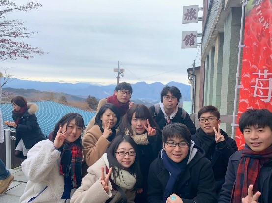

財務局紹介
財務局の役割
財務局は、明大祭実行委員会における「財」を管理する局です。「財」とは「お金」と「備品」を指します。財のエキスパートとして、正確に財の管理をすることで明大祭を支えています。実行委員会全体の活動が円滑になるよう、土台としての役割を担っています。お金を扱うということで責任を伴うタスクが多い局ですが、その分やりがいも感じられる局です！
財務局の活動内容
財務局が行うことには大きく分けて「財の管理」と「財に関することの発信」の2つがあります。財であるお金と備品を正しく効率的に管理するための制度を整えていきます。また、実際に財を利用するのは他の局の人なので、常にその制度を利用する人のことを考えて制度や財に関することを発信しています。
財務局の会議日
局会議：毎週水曜日19:00～（予定）
局会議に加えて週1回部門会議を行います。曜日は未定です。
レクの様子

財務局は他の局に比べて人数が少ないので、アットホームな雰囲気で学年を超えて仲良くなることができます！みんなでご飯に行ったり、時には丸1日使って遊びに行ったりすることもあります。活動以外でも楽しめる場面がたくさん！レクを通して仲良くなることで、活動もさらに楽しいものになるはずです！